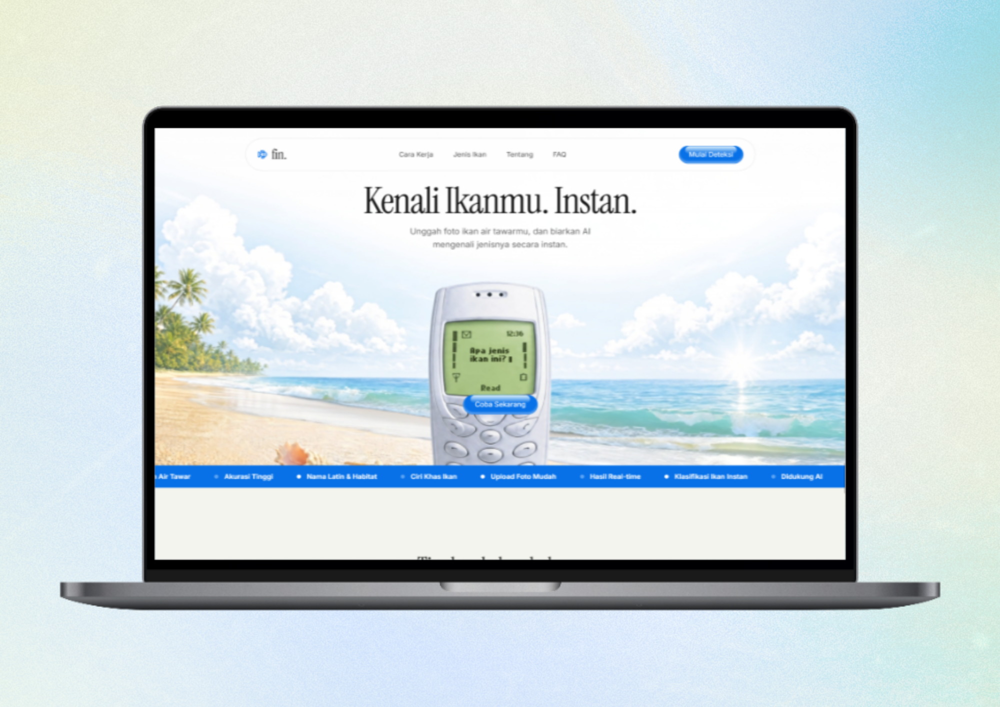
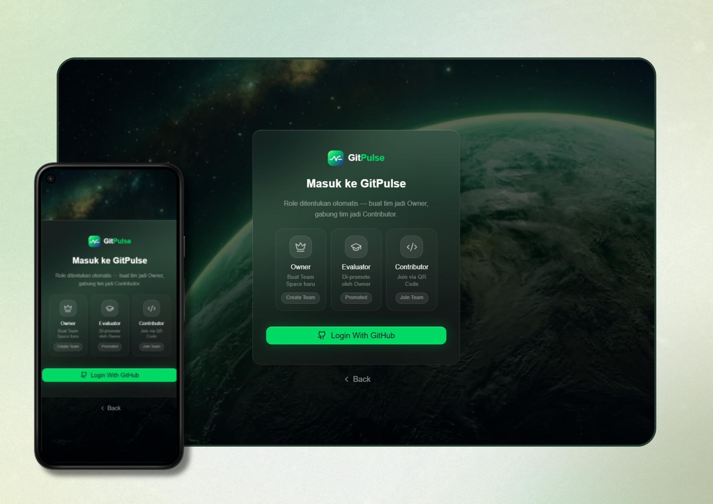
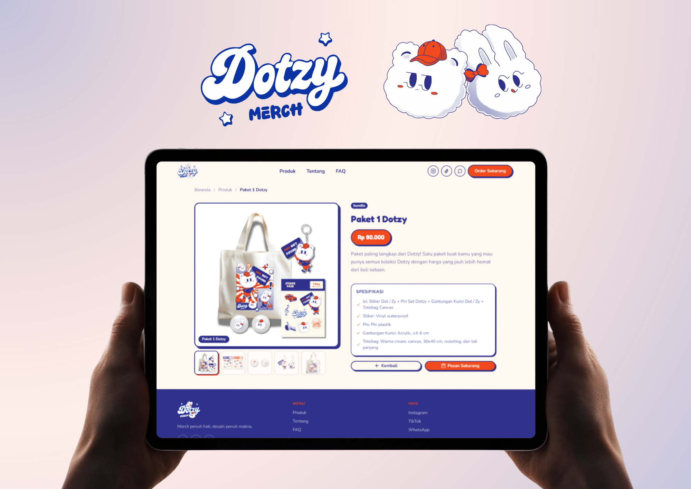
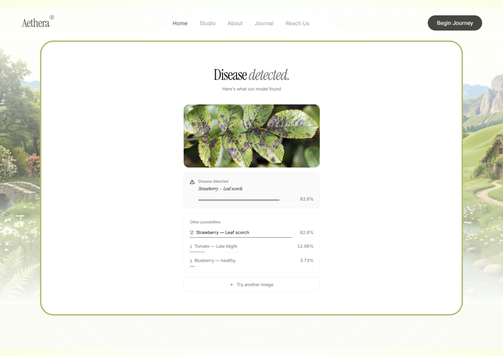
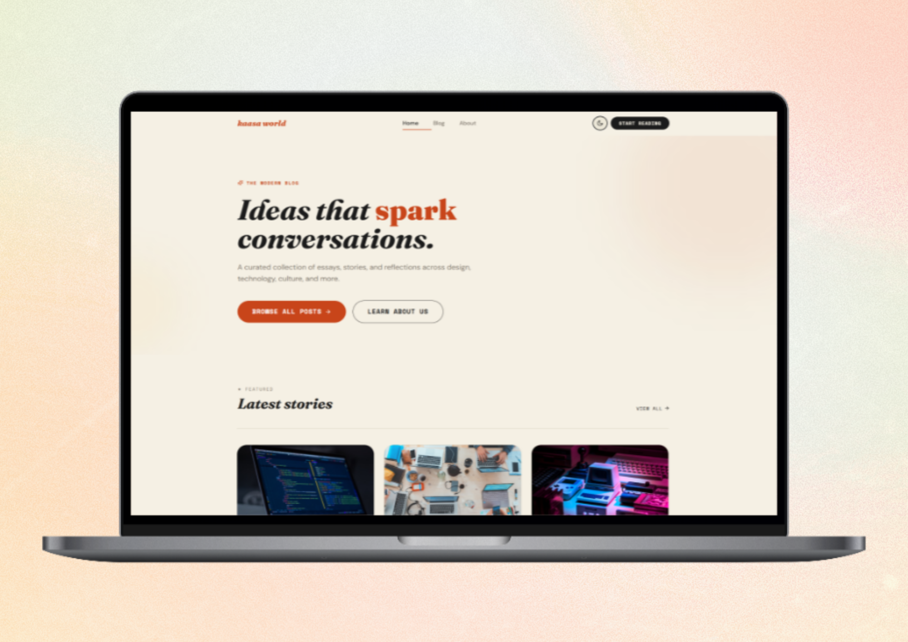
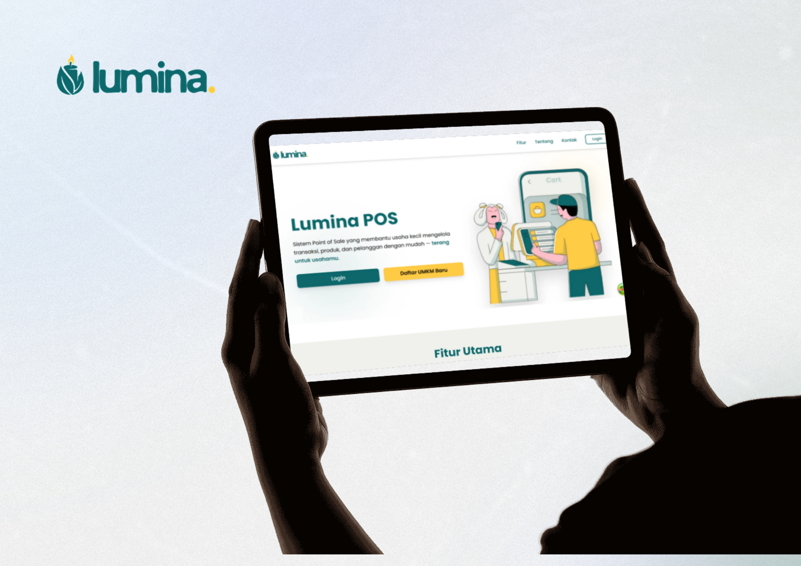
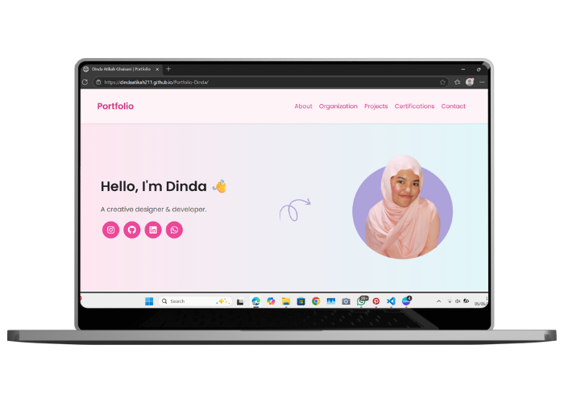
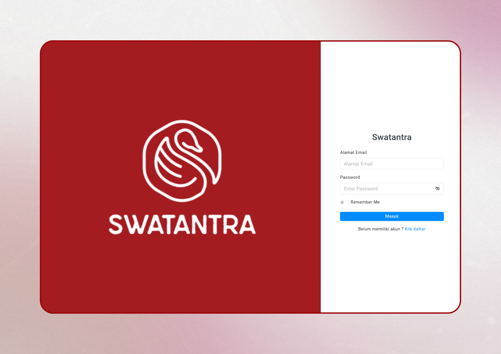

An AI web app that identifies freshwater fish species (Lele, Gurame, Ikan Mas, Nila, Patin) from a photo, complete with Latin name, habitat, and characteristics. Built with Next.js 15, Tailwind CSS, FastAPI, and TensorFlow/Keras (MobileNetV2/EfficientNetB0), trained on a Roboflow dataset. Currently in progress.
Frontend > Backend >
Final year project (TA) — a GitHub repository analytics platform using Machine Learning to objectively measure contributor productivity and repository health. Responsible for the Next.js platform, GitHub OAuth integration, and role-based Team Space UI (Owner, Evaluator, Contributor). Currently in progress.
See >
Catalog website for a local cartoon-themed merchandise brand (stickers, pins, keychains, totebags) built around original mascots Dot & Zy. Built with Next.js, TypeScript, Tailwind CSS, and Anime.js for smooth animations. Pre-order via Google Form.
See >
Self-initiated AI plant intelligence app that identifies plant species and detects diseases from a leaf photo across 38 classes, powered by a MobileNetV2 model trained on Kaggle. Built with Next.js, Tailwind CSS, and Flask (Python).
Frontend > Backend >
A self-initiated editorial-style blog built with Vue 3, TypeScript, Tailwind CSS, Pinia, and Axios. Features dark/light mode, search, tag filter, skeleton loaders, and smooth scroll-reveal animations.
See >
Led a 3-person team to build a multi-tenant Point-of-Sale web platform for retail SMEs, featuring real-time transactions, inventory, membership, shift management, and automated financial reports. Built with Next.js, TypeScript, Tailwind CSS, Payload CMS, Prisma, SQLite, TanStack, and MinIO.
See >
This website is designed to showcase my personal portfolio. Built using HTML, CSS, and JavaScript.
See >
Web-based finance and directory system for local UMKM in Desa Jabung. Contributed to Admin panel and Public Home development using Laravel (PHP) and MySQL, with UI/UX design in Figma.
See >
Contributed as a Front-End Developer using Flutter for the news page to build cross-platform user interfaces, with UI/UX design in Figma.
See >